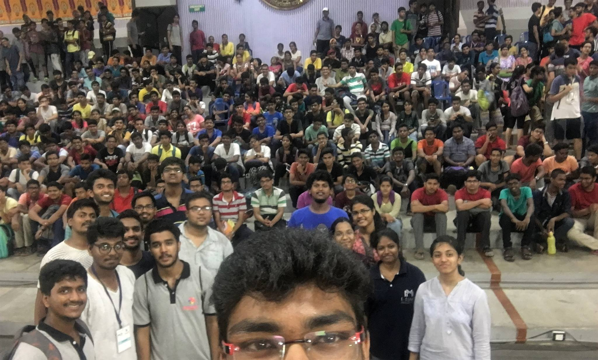

IIT Madras freshie forum. A platform for incoming freshies to "interact" with seniors of IIT Madras regarding anything about IITM.
You can use this platform to know about campus, branch, placements,clubs, features, beauty pros cons and basically everything about IIT-M.

SAATHI
Saathi plays a proactive role in IIT-M by organising events directed towards students' overall well-being by enhancing their self-mentoring abilities.
MITR
Mitr and Saathi are two primary organizations catering to this need. Mitr focuses on the reactive intervention (eg. through counselling) while Saathi focuses on the proactive side such as wellness awareness and transformation through workshops, talks and campaigns.
DOST
Dean Of STudents (DOST) is responsible for the administration of the hostels, the students extra curricular activities including sports and student publications. He is also responsible for the maintenance of student discipline.He chairs the Board of Students, a Board that formulates policies for the conduct of extra curricular activities and the functioning of hostels subject to the approval of the Senate.
Know More